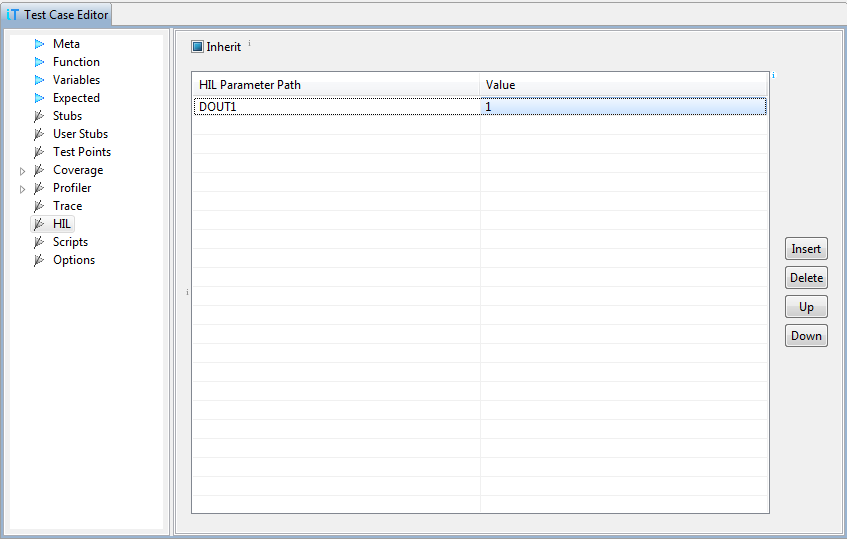

HIL
This page sets parameters of hardware controlled by winIDEA, for
example IO module on IC5000, or some third party simulator. To see
the available ports, download the code to the target, then select
a cell in the column HIL Parameter Path,
press F2 to start editing and
press Ctrl-Space for proposals.
